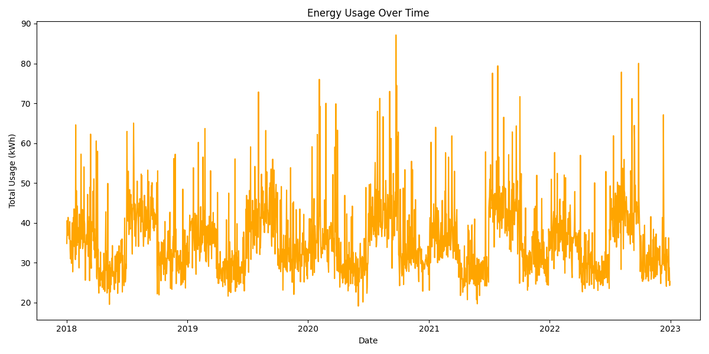
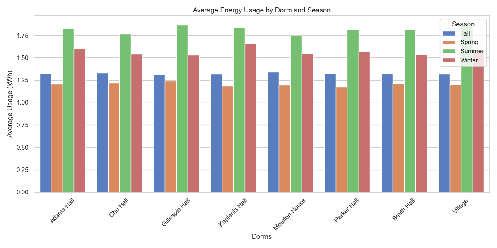
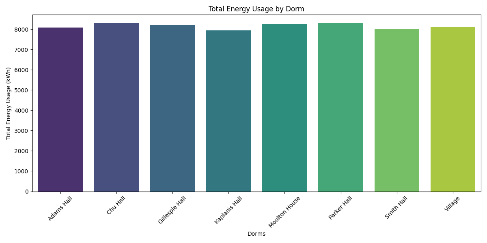

This chart highlights the average energy usage across dorms during different seasons. Winter and summer show higher usage due to heating and cooling demands.

This visualization demonstrates energy usage trends by hour for each dorm. Evening hours show peaks due to increased appliance usage.

This chart breaks down energy usage by appliances within each dorm. Appliances like heaters and air conditioners consume the most energy.

This bar chart displays total energy consumption for each dorm over the simulation period. Some dorms have significantly higher usage due to occupancy or appliance density.